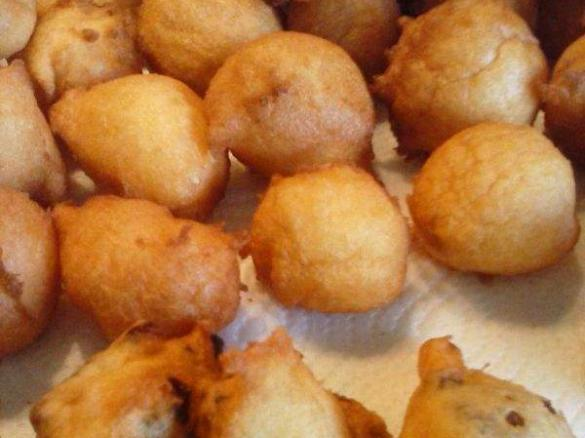

Mutzen
Zutaten für:
| 250 g | Magerquark |
| 4 | Eier |
| 1 Tasse | Zucker |
| 1 | Rosinen |
| 300 g | Mehl |
| 2 pac. | Vanille Zucker |
| 1 l | Öl zum Frittieren |
Zubereitung
Alle Zutaten bis auf die Rosinen in den Mixtopf geschlossen geben, 50 sec. Modus „Teig kneten“ verrühren. Öl auf dem Herd erhitzen. Mit zwei Tl. gebe ich den Teig ins Öl. Ich backe immer die erste Hälfte ohne Rosinen und unter den Rest Teig mische ich sie. Wenn die Mutzen oben im Topf schwimmen und eine goldgelbe Farbe haben sind sie fertig.
Guten Appetit!
Rezept erstellt von:
 Reini
Reini